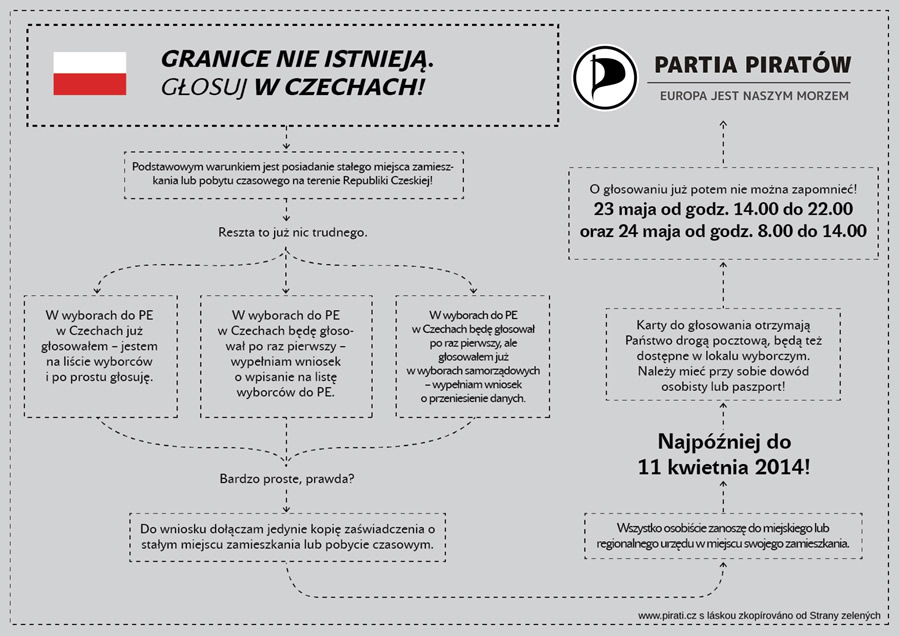
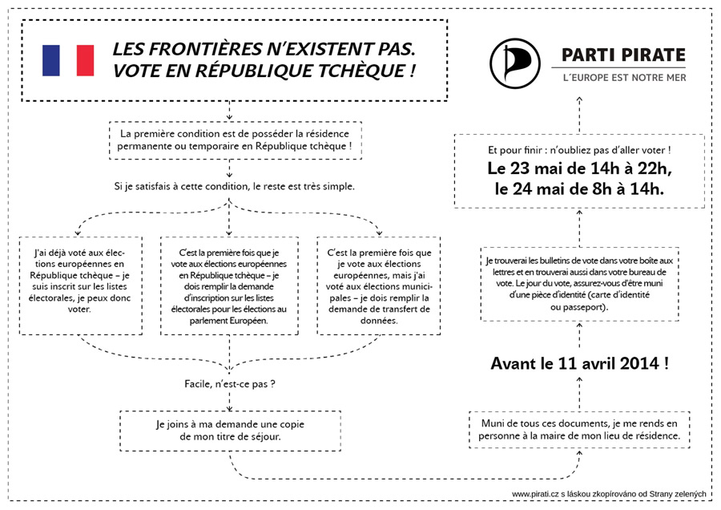
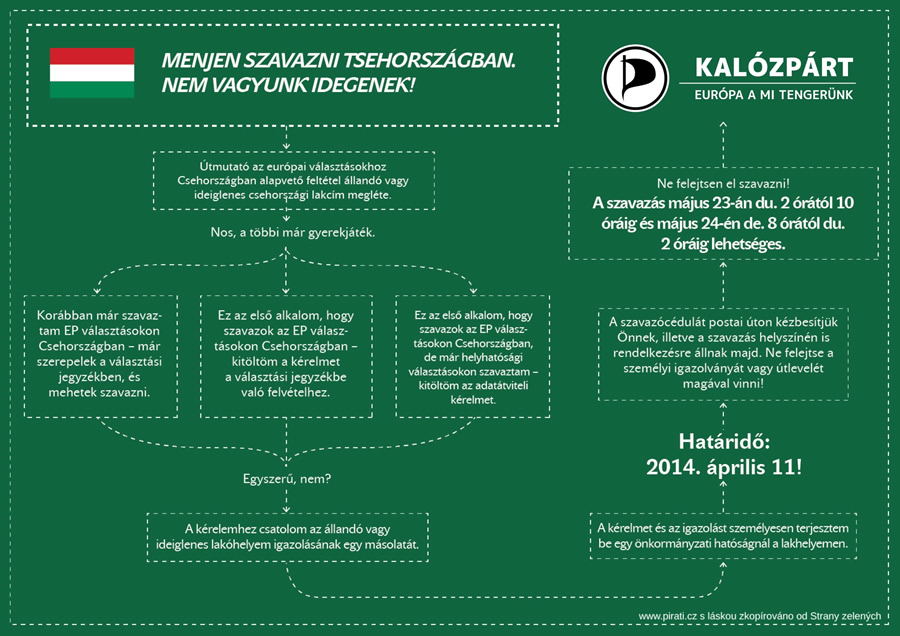

Citizens of the EU staying in the Czech Republic have a right to vote in the European Elections on the 23rd and 24th of May. The Czech Pirate Party brings information about the conditions to be elligibe to vote in the Czech Republic as a foreigner. We give you this info in 10 different European languages.
Můžete nám pomoci s překladem do dalších jazyků? Kontaktuje nás na: info@pirati.cz
Can you help us with translation to other languages? Contact us at: info@pirati.cz
Žádost o zápis do seznamu voličů
Žádost o přenesení údajů

Voters‘ list registration form (translation)
Data transfer form (translation)

Wniosek o wpisanie na listę wyborców | English translation
Wniosek o przeniesienie danych | English translation

Antrag zum Eintrag in das Wählerverzeichnis | English translation
Antrag zur Übertragung der Daten | English translation

La solicitud de inscripción en el registro electoral | English translation
La solicitud de transferencia de los datos | English translation

La demande d’inscription sur les listes électorales | English translation
La demande de transfert de données | English translation

Zahtjev za upis u spisak birača | English translation
Zahtjev za prijenos podataka | English translation

Kérelmet a választási jegyzékbe való felvételhez | English translation
Adatátviteli kérelmet | English translation

Richiesta per l’iscrizione all’elenco degli elettori | English translation
Richiesta per il trasferimento dei dati | English translation

формуляр за регистрация (English translation)
формуляр за прехвърляне на данниa (English translation)